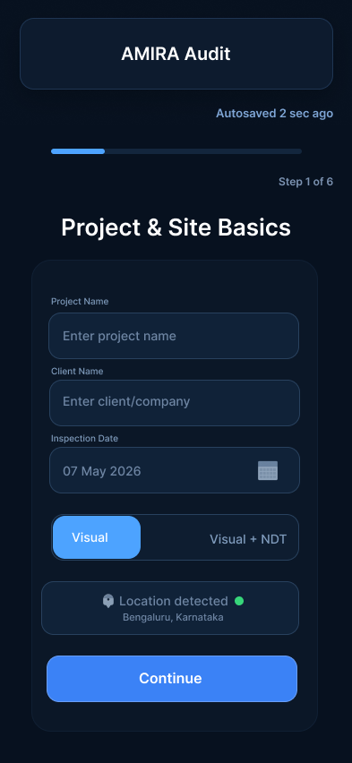
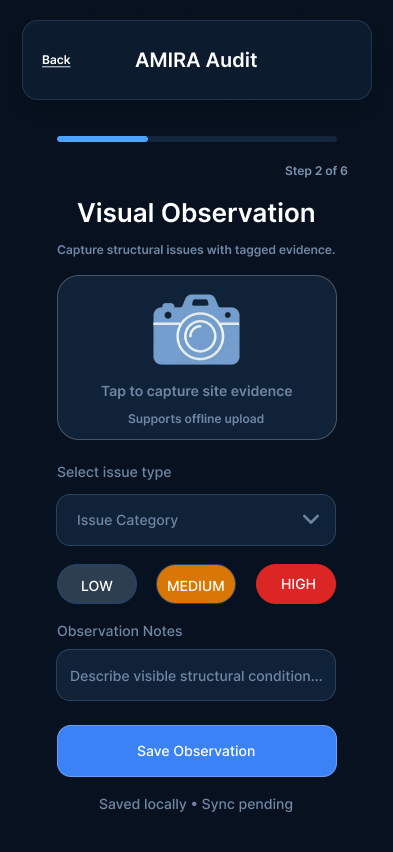
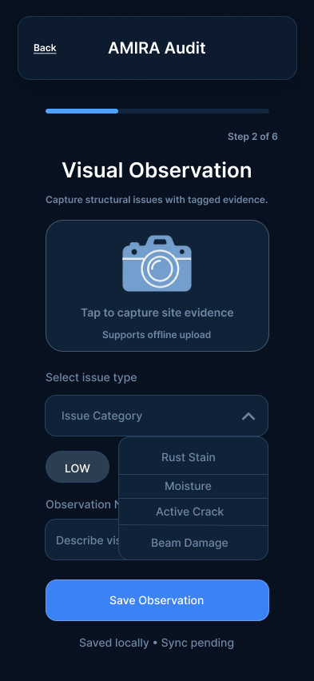
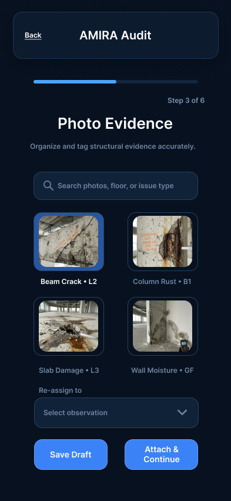
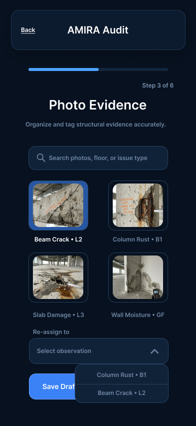
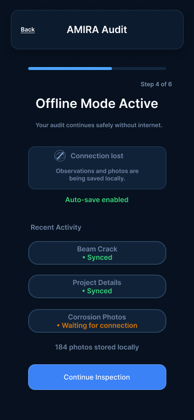
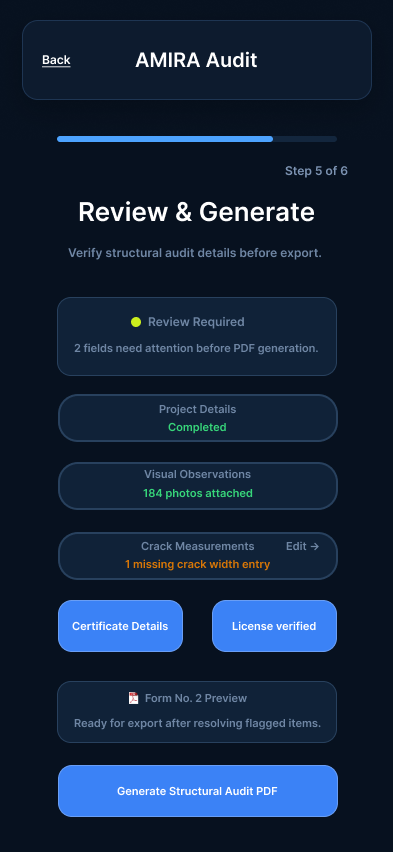
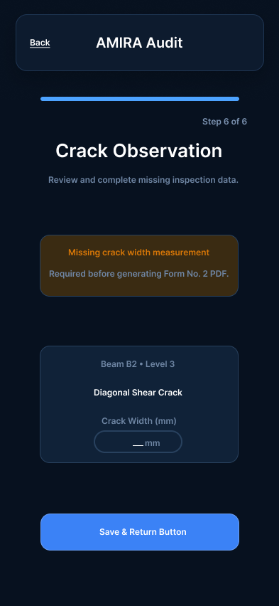

Overview
AMIRA is a structural audit platform used by field engineers to inspect buildings, capture evidence, document structural issues, and generate regulatory-grade PDF reports. This redesign focused on improving usability under real-world field conditions such as outdoor environments, low connectivity, one-handed operation, and large photo-heavy workflows.
Problem
The existing workflow involved multiple complex steps with heavy documentation requirements. Engineers needed a faster and more reliable way to capture observations, manage hundreds of photos, recover from errors, and confidently generate compliance-ready audit reports.
Goals
• Improve workflow clarity and navigation
• Support one-handed and gloved usage
• Ensure visible autosave during low connectivity
• Simplify evidence tagging and photo management
• Enable direct edit-jump from review to exact field
• Maintain a precise enterprise engineering tone
Design Approach
The redesign focused on structured information architecture, large touch-friendly controls, high contrast readability, and fast audit progression. Special attention was given to autosave feedback, offline continuity, and quick photo reassignment workflows.
User Flow
The wizard flow guides engineers from project setup to final PDF generation while preserving edit-jump functionality from the review screen. The flow supports save/resume states and offline continuation throughout the inspection process.

Mobile Screens
High-fidelity mobile interfaces designed for field usability, fast navigation, and structured data capture workflows.








Key UX Decisions
• Large touch targets for gloved interaction
• Sticky bottom CTA buttons for easy reachability
• High contrast text for outdoor visibility
• Autosave indicators for confidence during inspection
• Quick photo re-tagging for managing large evidence libraries
• Structured review system with edit-jump correction flow
Field Constraints Considered
The interface was designed specifically for engineers working in demanding environments such as construction sites, basements, and outdoor inspections. The workflow supports intermittent connectivity, sunlight readability, one-handed usage, and long-form technical documentation without overwhelming the user.
What I Learned
This project strengthened my understanding of enterprise UX systems, workflow optimization, mobile usability under real-world constraints, and designing interfaces for operational efficiency rather than purely visual aesthetics.